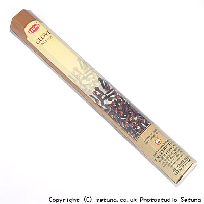

そのまま嗅ぐと甘いお菓子のようないい匂いがします。
火を点けてもしばらくはお香の匂いはしませんが、時間が経つにつれて甘いナツメグを使った焼き菓子?のような匂いが漂い始めます。
クスノキ系のいい香りも混ざり、ゆっくり部屋の中層の辺りから全体に満ちていく様に広がり始めます。
少し粉っぽいような甘い優しい香りですが若干土っぽいような感じの匂いも混じります。
残り香は少し長めに残ります。
お花系の香りのお香と合わせると引き立つ事が多いので、買って失敗したなーと思うお香に試してみるといいかもしれませんね。

<焚き合わせできるお香>